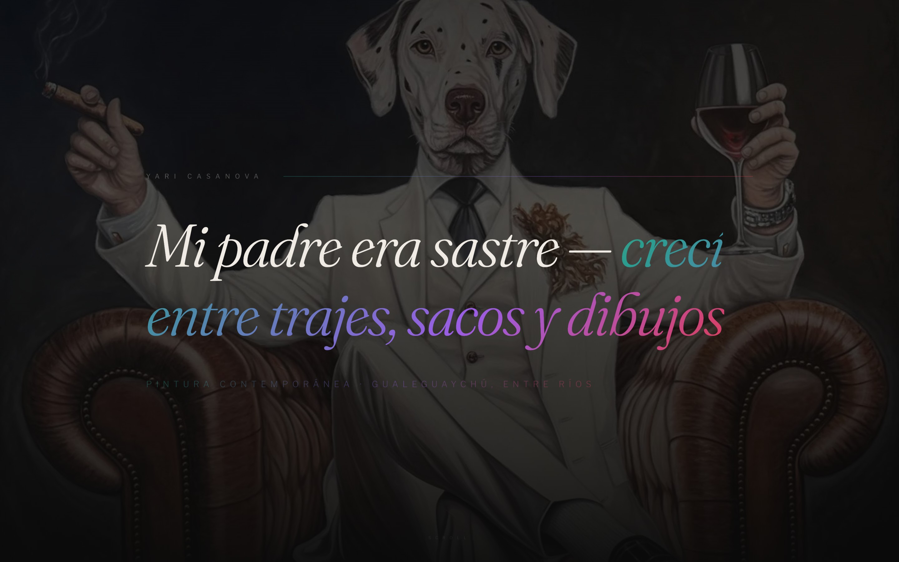

Yari Casanova
Pintura contemporánea — Arte figurativo surrealista pop
El problema
Yari Casanova es un artista plástico argentino con obra en colecciones privadas de Michael Bublé y la Presidencia de la Nación. Su presencia digital no reflejaba el nivel de su trabajo — necesitaba una plataforma que funcionara como galería inmersiva y herramienta de venta directa.

La solución
Un sitio dark-mode con scroll-driven galleries que presentan 12 obras en dos series curadas: Elegancia Oscura y El Rugido Urbano. Cada obra se despliega a pantalla completa con un sistema de lightbox que muestra dimensiones, técnica y disponibilidad.
La experiencia arranca con un intro animado con partículas en Canvas, y utiliza GSAP ScrollTrigger para reveals cinematográficos. Tipografía Fraunces serif para reflejar la sofisticación del arte figurativo, sobre un fondo negro con acentos en gradiente multicolor que evoca la paleta pictórica del artista.
Paleta
Tipografía
Fraunces
Features
- Intro animado con Canvas particles
- Galerías scroll-driven con 12 obras
- Lightbox con metadata de cada obra
- GSAP ScrollTrigger para reveals
- Smooth scroll con Lenis
- Navegación por secciones con prev/next